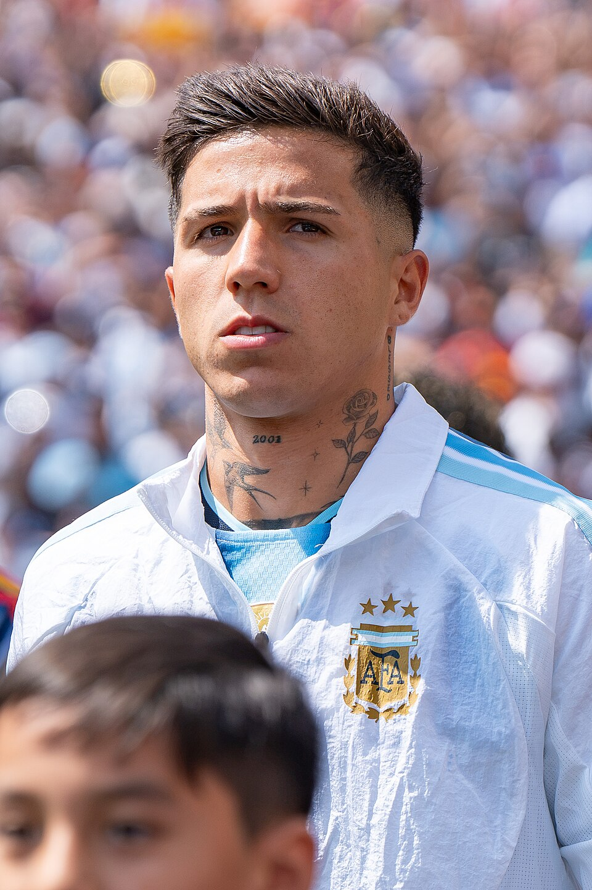

O fechamento da janela de transferências de verão de 2026/27 deixou uma fotografia clara da diferença financeira entre as principais ligas do futebol europeu. Inglaterra, Itália, Alemanha, Espanha e França encerraram o período de inscrições em 1º de setembro de 2026, mas o volume de dinheiro movimentado por seus clubes esteve longe de ser equilibrado.
A Premier League ficou em outra dimensão no mercado de transferências de 2026/27. No levantamento consolidado após o fechamento da janela, os clubes ingleses registraram quase € 4 bilhões em contratações.
Gastos das cinco grandes ligas europeias:
- 1. Premier League — € 3,972 bilhões
- 2. Serie A — € 1,116 bilhão
- 3. Bundesliga — € 769,8 milhões
- 4. LaLiga — € 758,98 milhões
- 5. Ligue 1 — € 583,3 milhões
A diferença mostra o tamanho da força financeira do futebol inglês: a Premier League investiu mais de cinco vezes o valor registrado pela LaLiga e mais de três vezes o total movimentado pela Serie A.
A contratação mais cara de toda a janela de verão 2026/27 entre as cinco grandes ligas europeias foi a de Enzo Fernández, do Chelsea para o Manchester City, por € 145 milhões.
O levantamento considera as movimentações de entrada registradas durante a janela e não inclui retornos de empréstimo ou receitas obtidas com vendas. Os valores são os reportados na base utilizada para a comparação e, portanto, podem apresentar diferenças em relação a outros levantamentos quando uma operação envolve bônus, metas, empréstimos com obrigação de compra ou parcelas futuras. Eles devem ser lidos como uma referência padronizada de mercado, e não como balanços contábeis oficiais dos clubes.
O ranking de investimento da janela de verão 2026/27 ficou assim:
- 1. Premier League — € 3,972 bilhões em 175 movimentações
- 2. Serie A — € 1,116 bilhão em 239 movimentações
- 3. Bundesliga — € 769,8 milhões em 161 movimentações
- 4. LaLiga — € 758,98 milhões em 146 movimentações
- 5. Ligue 1 — € 583,3 milhões em 136 movimentações
Além do enorme volume total, a Inglaterra também apresentou um custo médio muito superior. A média registrada foi de € 22,7 milhões por movimentação. Na Espanha, o custo médio ficou em € 5,2 milhões; na Alemanha, € 4,78 milhões; na Itália, € 4,67 milhões; e na França, € 4,29 milhões.
Premier League domina o mercado
Nenhuma liga teve capacidade de investimento comparável à Premier League em 2026. Foram 175 movimentações consideradas no levantamento, com custo total de € 3,972 bilhões.
O Manchester City liderou os gastos, com € 526,2 milhões investidos. Chelsea, Tottenham, Newcastle e Liverpool completaram o grupo dos cinco clubes ingleses que mais desembolsaram.
Clubes que mais gastaram na Premier League:
- 1. Manchester City — € 526,2 milhões
- 2. Chelsea — € 406,7 milhões
- 3. Tottenham — € 366,35 milhões
- 4. Newcastle — € 313 milhões
- 5. Liverpool — € 264,6 milhões
O tamanho financeiro da janela inglesa também aparece no ranking individual. Enzo Fernández deixou o Chelsea rumo ao Manchester City em uma operação avaliada em € 145 milhões no levantamento. Morgan Rogers, Elliot Anderson e Bradley Barcola também superaram a barreira dos € 120 milhões.
As 10 contratações mais caras da Premier League em 2026/27:
- 1. Enzo Fernández — Chelsea → Manchester City — € 145 milhões
- 2. Morgan Rogers — Aston Villa → Chelsea — € 138 milhões
- 3. Elliot Anderson — Nottingham Forest → Manchester City — € 135 milhões
- 4. Bradley Barcola — PSG → Liverpool — € 125 milhões
- 5. Sandro Tonali — Newcastle → Tottenham — € 108 milhões
- 6. Mateus Fernandes — West Ham → Tottenham — € 99 milhões
- 7. Ayyoub Bouaddi — Lille → Manchester City — € 95 milhões
- 8. Savinho — Manchester City → Tottenham — € 87,7 milhões
- 9. Bruno Guimarães — Newcastle → Arsenal — € 87,5 milhões
- 10. Carlos Baleba — Brighton → Manchester United — € 75,9 milhões
Série A tem mercado espalhado entre os gigantes
A Itália foi a segunda liga de maior investimento total entre as cinco analisadas. Foram 239 movimentações e € 1,116 bilhão contabilizado em contratações.
O dinheiro ficou mais distribuído entre os principais clubes do que na Espanha e na França. Juventus, Milan, Roma, Fiorentina e Inter aparecem no bloco de maiores investidores. No recorte padronizado usado para comparar as cinco ligas, a Juventus ficou no topo, com € 164,35 milhões. A força desses clubes está diretamente ligada à história do Campeonato Italiano, uma das competições nacionais mais tradicionais do futebol europeu.
Clubes que mais gastaram na Serie A:
- 1. Juventus — € 164,35 milhões
- 2. Milan — € 130,2 milhões
- 3. Roma — € 124,5 milhões
- 4. Fiorentina — € 123,3 milhões
- 5. Inter de Milão — € 101 milhões
Gonçalo Ramos foi a principal contratação do futebol italiano. O atacante saiu do PSG para o Milan por € 74 milhões na referência utilizada. O clube também buscou Diego Moreira no Strasbourg, enquanto a Juventus trouxe nomes como Randal Kolo Muani e Kerim Alajbegović.
As 10 contratações mais caras da Serie A:
- 1. Gonçalo Ramos — PSG → Milan — € 74 milhões
- 2. Diego Moreira — Strasbourg → Milan — € 50 milhões
- 3. Rasmus Højlund — Manchester United → Napoli — € 44 milhões
- 4. Loïs Openda — RB Leipzig → Juventus — € 42,8 milhões
- 5. Randal Kolo Muani — PSG → Juventus — € 41,2 milhões
- 6. Santiago Castro — Bologna → Roma — € 36 milhões
- 7. Kerim Alajbegović — Bayer Leverkusen → Juventus — € 32 milhões
- 8. Trevoh Chalobah — Chelsea → Como — € 30 milhões
- 9. Djed Spence — Tottenham → Inter de Milão — € 30 milhões
- 10. Curtis Jones — Liverpool → Inter de Milão — € 30 milhões
Bundesliga tem Leverkusen como maior investidor
A Bundesliga terminou a janela com € 769,8 milhões investidos em 161 movimentações. Diferentemente da Premier League, nenhum negócio chegou à casa dos € 100 milhões.
O Bayer Leverkusen liderou o investimento por clubes, com € 131 milhões. Borussia Dortmund e Bayern de Munique vieram logo depois, separados por apenas € 2,5 milhões no levantamento.
Clubes que mais gastaram na Bundesliga:
- 1. Bayer Leverkusen — € 131 milhões
- 2. Borussia Dortmund — € 108,5 milhões
- 3. Bayern de Munique — € 106 milhões
- 4. RB Leipzig — € 67,5 milhões
- 5. Hoffenheim — € 66,2 milhões
O topo das contratações teve empate. O Bayern pagou € 50 milhões por Nathaniel Brown, do Eintracht Frankfurt, e o mesmo valor por Ismael Saibari, do PSV.
As 10 contratações mais caras da Bundesliga:
- 1. Nathaniel Brown — Eintracht Frankfurt → Bayern de Munique — € 50 milhões
- 2. Ismael Saibari — PSV → Bayern de Munique — € 50 milhões
- 3. Konstantinos Karetsas — Genk → Borussia Dortmund — € 30 milhões
- 4. Guéla Doué — Strasbourg → Bayer Leverkusen — € 30 milhões
- 5. Moussa Diaby — Al-Ittihad → Bayer Leverkusen — € 28 milhões
- 6. Miguel Gutiérrez — Napoli → Bayer Leverkusen — € 26 milhões
- 7. Ioannis Konstantelias — PAOK → Borussia Dortmund — € 26 milhões
- 8. Maxime Estève — Burnley → RB Leipzig — € 25 milhões
- 9. Dzenan Pejcinovic — Wolfsburg → Stuttgart — € 25 milhões
- 10. Facundo Medina — Olympique de Marselha → Bayer Leverkusen — € 23 milhões
LaLiga concentra investimentos nos dois gigantes
A Espanha ficou pouco atrás da Alemanha no volume total. A LaLiga contabilizou 146 movimentações e € 758,98 milhões em contratações.
A característica mais marcante foi a concentração do investimento. Real Madrid, Barcelona e Atlético de Madrid lideraram com ampla margem sobre o restante dos clubes. O Real desembolsou € 225 milhões; o Barcelona, € 184 milhões; e o Atlético, € 130 milhões. O quarto colocado, Real Betis, aparece com € 30,5 milhões.
Clubes que mais gastaram na LaLiga:
- 1. Real Madrid — € 225 milhões
- 2. Barcelona — € 184 milhões
- 3. Atlético de Madrid — € 130 milhões
- 4. Real Betis — € 30,5 milhões
- 5. Deportivo La Coruña — € 26 milhões
A maior operação do futebol espanhol foi a contratação de Yan Diomande pelo Real Madrid. O atacante deixou o RB Leipzig em uma transferência registrada em € 125 milhões na base utilizada, tornando-se também uma das maiores movimentações de toda a janela europeia.
As 10 contratações mais caras da LaLiga:
- 1. Yan Diomande — RB Leipzig → Real Madrid — € 125 milhões
- 2. Anthony Gordon — Newcastle → Barcelona — € 80 milhões
- 3. Rodri — Manchester City → Barcelona — € 60 milhões
- 4. Marc Cucurella — Chelsea → Real Madrid — € 55 milhões
- 5. Morten Hjulmand — Sporting CP → Atlético de Madrid — € 40 milhões
- 6. Cristian Romero — Tottenham → Atlético de Madrid — € 40 milhões
- 7. Kang-in Lee — PSG → Atlético de Madrid — € 35 milhões
- 8. Carlos Espí — Levante → Real Madrid — € 25 milhões
- 9. Karim Adeyemi — Borussia Dortmund → Barcelona — € 22 milhões
- 10. Denzel Dumfries — Inter de Milão → Real Madrid — € 20 milhões
.
Na França o PSG concentra as maiores compras
A Ligue 1 teve o menor investimento das cinco grandes ligas no levantamento: € 583,3 milhões em 136 movimentações.
O PSG respondeu sozinho por € 152 milhões, equivalente a pouco mais de um quarto do investimento contabilizado no campeonato. Strasbourg apareceu na sequência com € 94,4 milhões, enquanto o Paris FC investiu € 79 milhões.
Clubes que mais gastaram na Ligue 1:
- 1. Paris Saint-Germain — € 152 milhões
- 2. Strasbourg — € 94,4 milhões
- 3. Paris FC — € 79 milhões
- 4. Monaco — € 48 milhões
- 5. Lille — € 42,1 milhões
As três contratações mais caras da liga foram justamente do PSG. Maghnes Akliouche deixou o Monaco por € 50 milhões, Ferran Torres chegou do Barcelona por € 48,5 milhões e Mika Godts foi contratado do Ajax por € 45 milhões.
As 10 contratações mais caras da Ligue 1:
- 1. Maghnes Akliouche — Monaco → PSG — € 50 milhões
- 2. Ferran Torres — Barcelona → PSG — € 48,5 milhões
- 3. Mika Godts — Ajax → PSG — € 45 milhões
- 4. Patrick Zabi — Stade de Reims → Paris FC — € 25 milhões
- 5. Matthis Abline — Nantes → Monaco — € 25 milhões
- 6. Eliezer Mayenda — Sunderland → Rennes — € 22 milhões
- 7. Karim Coulibaly — Werder Bremen → Strasbourg — € 20 milhões
- 8. Facundo Medina — Lens → Olympique de Marselha — € 18 milhões
- 9. Diego Coppola — Brighton → Paris FC — € 17,5 milhões
- 10. Deivid Washington — Chelsea → Strasbourg — € 16 milhões
A distância financeira para o restante da Europa
A janela de 2026/27 reforçou uma tendência estrutural do mercado europeu: não existe, atualmente, equilíbrio de capacidade de investimento entre a Premier League e as outras quatro grandes ligas.
Mais do que uma coleção de negociações milionárias, a janela de transferências de 2026/27 mostrou modelos de mercado diferentes. A Premier League operou em escala financeira muito superior; a Serie A combinou grande número de operações com investimento espalhado entre vários clubes; a Bundesliga concentrou parte relevante de suas compras em Leverkusen, Dortmund e Bayern; a LaLiga teve forte dependência financeira de Real Madrid, Barcelona e Atlético; e a Ligue 1 apresentou um mercado mais contido, liderado pelos investimentos do PSG. Boa parte desses investimentos também tem como pano de fundo a disputa pela Champions League , competição que reúne os maiores clubes da Europa e construiu uma história marcada por grandes campeões e decisões históricas.
Com o fechamento da janela de verão, esses números se tornam uma referência para analisar a temporada 2026/27: não apenas quem contratou os jogadores mais caros, mas quais clubes transformaram o investimento em desempenho, quais reforços justificaram as cifras envolvidas e quais operações acabaram se tornando os grandes negócios — ou os grandes fracassos — do mercado europeu.